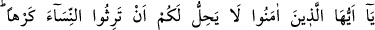
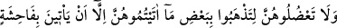
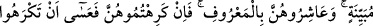
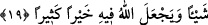

KADINLARLA İYİ GEÇİNMEK
19- Ey îmân edenler! Kadınlara zorla vâris olmanız size helâl değildir. Apaçık bir
edepsizlik yapmadıkça, onlara verdiğinizin bir kısmını ele geçirmek için de
kadınları sıkıştırmayın. Onlarla iyi geçinin. Eğer onlardan hoşlanmazsanız, olabilir
ki siz bir şeyi hoşlanmazsınız da Allah onda birçok hayırlar takdîr etmiş bulunur!
Câhiliyye devrinde birinin yakını öldüğü zaman elbisesini ölenin hanımının yâhut bu
hanımın çadırının üzerine atar ve: “Ben bu adamın malına mîrasçı olduğum gibi
hanımına da mîrasçıyım” der ve böylece kadını elde etme hakkına herkesten daha çok
sahip olurdu. Sonra dilerse kadına ilk mehrini vererek evlenir, dilerse mehrini alıp
kendisine hiç bir şey vermeden onu başkasıyla evlendirir, dilerse de eşinden kalan malı
kendisine fidye vermesi için ona baskı yapar ve hapsederdi. Kadın, üzerine elbise
atılmadan âilesine gidebilirse, kendisiyle ilgili her konuda kendisi hak sahibi olurdu.
İşte onlara: “Kendileri istemedikleri halde mîras kalan malları alır gibi mîras yoluyla,
kadınları almanız size helal değildir” buyurularak bu muâmele yasaklanmıştır.
“Onlara verdiğinizin,” yani mehrin “bir kısmını” mecbur kalıp size verdiklerinde,
siz de bunu almak ve “ele geçirmek için, kadınları sıkıştırmayın.”
Burada hitap kocalaradır. (  ) hapsetme ve sıkıştırma demektir. Câhiliyye
) hapsetme ve sıkıştırma demektir. Câhiliyye
devrinde bir kimse bir kadınla evlendiği ve kendisine de ihtiyacı kalmadığı zaman ona
kötü muâmele, zulüm ve baskının yanı sıra bir de malını kendisine fidye verip çekip
gitmesi için hapsederdi. İşte bu tür davrananlara “Kadınları sıkıştırmayın”
denilmektedir.
“Apaçık bir edepsizlik yaparlarsa başka.” “Açık edepsizlik”ten maksad,
başkaldırma, geçimsizlik, kocasına ve kocasının âilesine çirkin, hiddetli sözler
sarfederek eziyet etme gibi çirkin durumlardır. Yâhut “fâhişe”, zinâdır. Buradaki istisnâ
genel durumdan veya bütün vakitlerden yâhut da umûmî illetlerden istisnâdır. Yâni,
“Kadınlarınızı, ancak açık bir edepsizlik durumunda yâhut açıkça bir edepsizlik
yaptıkları vakit, yâhut da açık bir edepsizlik yapmaları sebebiyle olan sıkıştırmalar
hâriç hiç bir durumda yâhut hiç bir zaman veya hiç bir sebeple sıkıştırmanız size helal
değildir. Çünkü bu takdirde sebep, onlar tarafından olmuş olur ki o zaman ayrılmayı
istemekde mâzûr olursunuz.